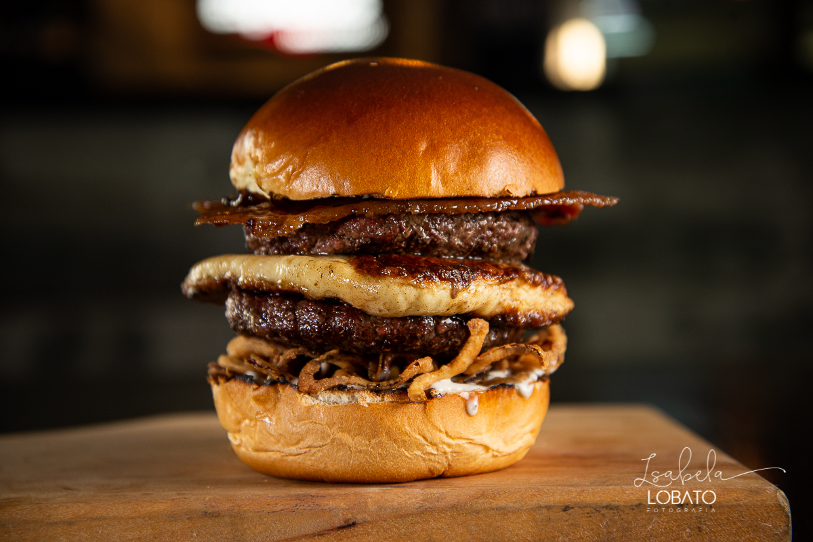

Aqui divulgamos comidas deliciosas que você deveria experimentar!
Esse é imperdivél!

Misture 500g de acém moído com 100g de bacon moído.
Separe a carne em porções, molde no formato de hambúrguer e aperte levemente o centro para não estufar.
Aqueça bem uma frigideira com um fio de óleo. Grelhe a carne por 3 minutos de cada lado em fogo alto.
Tempere com sal e pimenta-do-reino apenas na hora de fritar. No último minuto, adicione o queijo por cima e tampe para derreter. Sirva no pão tostado na manteiga.
Corte as batatas em palitos, seque bem com um pano e misture com azeite, páprica defumada, alho em pó e sal. Leve à Airfryer a 200°C por 20 a 25 minutos, sacudindo o cesto na metade do tempo para dourar por igual. Sirva imediatamente para garantir a crocância.
Receitas da Lari
ByLari